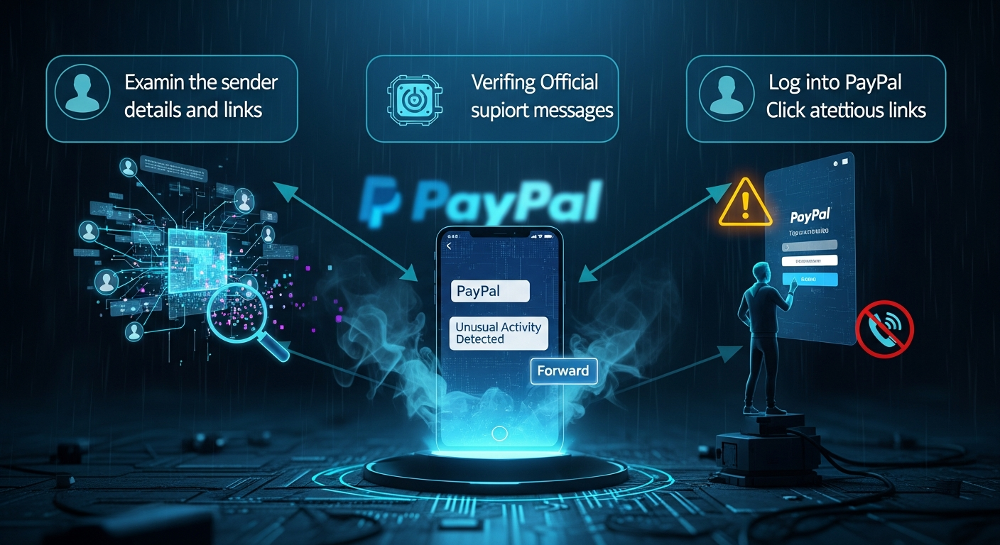

In the bustling digital marketplace, where convenience often intertwines with vulnerability, the sudden jolt of an "unusual activity" SMS message from what appears to be PayPal can trigger immediate panic. Your heart races, a cold dread sets in, and the natural instinct is to react swiftly, often by clicking the provided link. This very human response – a blend of concern for financial security and a desire for quick resolution – is precisely what cybercriminals exploit. These deceptive messages, known as "smishing" (SMS phishing) attacks, are meticulously crafted to mimic legitimate alerts, luring unsuspecting users into revealing sensitive information or downloading malicious software. PayPal, as a cornerstone of online transactions for millions worldwide, represents an incredibly lucrative target for these fraudsters, making its users prime candidates for such sophisticated social engineering ploys. The financial implications can be devastating, ranging from unauthorized transactions and account takeover to full-blown identity theft, underscoring the critical need for an unyielding skepticism and a robust verification strategy. This article will equip you with the essential knowledge and actionable steps to confidently identify and neutralize these fraudulent PayPal "unusual activity" SMS messages, transforming you from a potential victim into a vigilant defender of your digital finances. We will delve into three indispensable methods that form a multi-layered defense, ensuring that when the next deceptive SMS arrives, you are prepared not just to recognize it, but to effectively dismiss its malicious intent.
The cardinal principle in navigating the treacherous waters of online security, especially when confronted with an unsolicited "unusual activity" alert via SMS, is an unwavering commitment to direct access. This means, unequivocally, that you should never, under any circumstances, click on a link embedded within a suspicious text message. The temptation is immense, fueled by urgency and concern, but succumbing to this impulse is akin to walking directly into a well-laid trap. Phishing links are meticulously designed to redirect you to fraudulent websites that are near-perfect replicas of the legitimate PayPal login page. These imposter sites, often indistinguishable at first glance, serve a singular, nefarious purpose: to harvest your login credentials, personal data, or even install malware onto your device. Once you input your username and password into such a spoofed site, those details are immediately transmitted to the scammer, granting them unauthorized access to your actual PayPal account, your linked bank accounts, and potentially your entire financial ecosystem. The immediate aftermath can include unauthorized purchases, transfers of funds, and a myriad of other financial losses that are often difficult and time-consuming to reverse.
Instead of clicking, the golden rule dictates a proactive and secure approach: always navigate directly to the official PayPal website or launch the legitimate PayPal mobile application. For web access, this involves manually typing "paypal.com" into your browser's address bar or using a previously saved bookmark that you know is authentic. For mobile users, ensure you are opening the app downloaded directly from your device's official app store (Google Play Store for Android, Apple App Store for iOS), never from a link. This direct access strategy bypasses any potential malicious redirects, ensuring that you land on PayPal's genuine, secure platform. Once logged in through these verified channels, you can then check your account's notification center, resolution center, or transaction history for any legitimate alerts or discrepancies. If PayPal truly has identified unusual activity, a corresponding notification will be prominently displayed within your secure account interface. The absence of such an alert on the official platform serves as definitive proof that the SMS message you received was fraudulent.
Furthermore, even if you accidentally tap a link before realizing your mistake, a crucial secondary line of defense lies in scrutinizing the URL displayed in your browser. Fraudulent URLs often employ subtle tricks, such as typosquatting (e.g., "paypai.com" instead of "paypal.com"), subdomains that try to mask the true destination (e.g., "security-alert.paypal.scammer.com"), or unusual domain extensions. Always look for the padlock icon in the browser's address bar, indicating a secure HTTPS connection, but understand that even legitimate-looking certificates can sometimes be acquired by scammers. The ultimate verification, however, remains the domain name itself – ensure it is precisely "paypal.com" and nothing else. This meticulous attention to detail at the URL level, combined with the primary strategy of direct navigation, creates an ironclad defense against the initial vector of almost all smishing attacks. Cultivating this habit of direct access is not merely a recommendation; it is a fundamental pillar of digital financial security, empowering you to effectively disarm the most common and dangerous aspect of these deceptive "unusual activity" SMS scams.
Beyond the critical "never click" directive, a second formidable layer of defense against fake PayPal "unusual activity" SMS messages involves a meticulous examination of the message itself and its purported sender. Scammers often rely on the sheer volume of their attacks and the hurried nature of recipients, hoping that subtle inconsistencies will be overlooked. However, these inconsistencies are precisely the breadcrumbs that lead to the undeniable conclusion of fraud. The first point of scrutiny should always be the sender's information. Legitimate PayPal messages typically originate from specific, recognized shortcodes (e.g., a five or six-digit number like 729725 in the US) or designated, official phone numbers. If the SMS comes from a standard, ten-digit mobile number, or an international number that seems out of place, it should immediately raise a significant red flag. While some legitimate companies occasionally use longer numbers for certain alerts, a critical "unusual activity" warning from a random mobile number is highly atypical for a financial institution of PayPal's stature. Scammers often use burner phones, spoofed numbers, or bulk SMS services that do not align with official corporate communication channels.
Next, turn your attention to the message's content, specifically its grammar, spelling, and overall tone. Professional organizations like PayPal employ dedicated communication teams to ensure all official correspondence is impeccably written, free from grammatical errors, awkward phrasing, or typographical mistakes. A message riddled with typos, incorrect punctuation, or sentences that simply don't sound natural in English is a glaring indicator of a scam. These errors often stem from non-native English speakers crafting the messages or from rapid, unreviewed production by scam operations. Furthermore, consider the greeting. Legitimate PayPal communications will almost always address you by your specific name (e.g., "Dear [Your Name]") because they know who you are. A generic salutation such as "Dear Customer," "Hello User," or simply no greeting at all, is a common tactic employed by phishers who are broadcasting their messages indiscriminately to a wide audience without personalized data. This lack of personalization is a strong signal that the sender does not genuinely know your identity or account details, further confirming the message's fraudulent nature.
The psychological tactics embedded within the message also warrant careful analysis. Scammers almost invariably inject a sense of extreme urgency and veiled threats to bypass rational thought and induce panic. Phrases like "Immediate action required," "Your account will be suspended," "Funds frozen," or "Click now to prevent permanent account closure" are classic hallmarks of phishing attempts. PayPal, while it may alert you to unusual activity, will do so in a measured, informative tone, directing you to secure channels for resolution, not demanding instantaneous action via an unverified link. They understand the importance of user trust and would not resort to scare tactics that undermine their professional image. Additionally, evaluate the specificity of the message. Does it refer to a particular transaction, amount, or date that you can immediately verify? Or is it vague, simply stating "unusual activity" without any concrete details? Vague language is another common scammer strategy, designed to be broadly applicable to any recipient, whereas legitimate alerts are typically quite specific. By meticulously dissecting these anatomical elements of the SMS – the sender's identity, the quality of the writing, the personalized greeting, and the underlying psychological manipulation – you empower yourself with a powerful forensic toolkit to unequivocally distinguish genuine alerts from malicious digital masquerades, effectively neutralizing the scam before it can even begin to compromise your security.
Protect your identity and browse privately with Surfshark One - the all-in-one security suite.
GET 60% OFF SURFSHARK NOWThe third and arguably most definitive method for verifying the authenticity of a PayPal "unusual activity" SMS is to cross-reference any alleged alert with PayPal's official and secure communication channels. This approach acts as the ultimate litmus test, providing an undeniable verdict on whether the message you received is legitimate or a fraudulent attempt to compromise your account. The core principle here is to bypass any information provided in the suspicious SMS entirely and instead rely solely on the communication avenues that PayPal itself designates as secure. The primary and most reliable source for any account-related alerts, including unusual activity, is your PayPal account itself. Upon receiving a dubious SMS, your immediate action, after ensuring you are not clicking any links from the message, should be to log into your PayPal account directly. This means opening your web browser and typing in "paypal.com" or launching the official PayPal mobile application from your device's home screen. Once logged in, navigate to your "Resolution Center," "Notification Center," or "Security Center." Legitimate alerts regarding unusual activity, security concerns, or pending actions will always be prominently displayed within these sections of your secure account interface. If the SMS mentions a specific transaction, review your recent activity history meticulously. If there is no corresponding alert or suspicious transaction visible within your official PayPal account, you can be absolutely certain that the SMS message you received was a fake.
Should you still harbor any doubts, or if the situation feels particularly complex, the next step is to initiate contact with PayPal's customer support, but critically, do so through official channels only. Never, under any circumstances, call a phone number provided in the suspicious SMS or reply to the message. Scammers often include fake support numbers designed to extract information from you directly over the phone. Instead, locate PayPal's official contact information on their legitimate website (paypal.com/contact). This typically includes phone numbers for various regions, live chat options, or a secure message center within your account. When you contact them, clearly explain the SMS you received and ask them to verify if there is any legitimate unusual activity on your account. They will be able to confirm or deny the validity of the alert and guide you on any necessary steps. This direct, proactive engagement with PayPal's authenticated support ensures that you are communicating with genuine representatives and not falling prey to an elaborate impersonation scheme.
Furthermore, PayPal provides a dedicated mechanism for users to report phishing attempts. If you receive a suspicious SMS or email, you can forward it to spoof@paypal.com. This action is not only crucial for your own security but also contributes to PayPal's efforts to track and shut down ongoing phishing campaigns, protecting other users in the process. By actively reporting these scams, you become an integral part of the broader cybersecurity defense network. Regularly reviewing your PayPal account settings, including linked devices, login history, and security preferences, also serves as an excellent preventative measure. Any unauthorized changes in these areas could indicate a prior compromise, which might then be followed by a fake "unusual activity" SMS as a distraction. The habit of cross-referencing all external alerts with the internal, verified information within your PayPal account, combined with the willingness to engage official support channels, forms an impenetrable barrier against the sophisticated tactics of smishing fraudsters, safeguarding your financial integrity with unwavering certainty.
While understanding how to identify fake PayPal "unusual activity" SMS messages is crucial, building a robust proactive defense strategy is equally, if not more, important in the ongoing battle against cybercrime. Relying solely on reactive measures leaves you vulnerable to the next evolution of scam tactics. Instead, integrating essential cybersecurity tools and adopting proactive habits can significantly fortify your digital perimeter, making you a much harder target for fraudsters. One of the most critical tools in your arsenal should be Two-Factor Authentication (2FA), also known as Multi-Factor Authentication (MFA). PayPal, like most reputable financial platforms, offers 2FA, typically involving a code sent to your registered mobile device or generated by an authenticator app, which you must enter in addition to your password. Enabling 2FA on your PayPal account, and indeed on all your critical online accounts, provides an indispensable layer of security. Even if a scammer manages to steal your password through a phishing attempt, they would still be unable to access your account without the second factor, effectively rendering their stolen credentials useless. This single step dramatically reduces the risk of account takeover and financial fraud, acting as a powerful deterrent against even sophisticated attackers.
Another indispensable tool is a reputable password manager. In today's digital landscape, where you likely have dozens, if not hundreds, of online accounts, remembering unique, strong passwords for each is an impossible task. Password managers solve this by generating complex, random passwords for you and securely storing them, requiring you to remember only one master password. Beyond convenience, their security benefit is profound: they prevent phishing. When you use a password manager to auto-fill your credentials, it only does so if the URL matches the legitimate website it has stored. If you've landed on a spoofed PayPal site, your password manager will not offer to fill in your details, instantly alerting you to the fraudulent nature of the page. This passive yet highly effective detection mechanism is a game-changer in preventing credential harvesting. Furthermore, maintaining up-to-date antivirus and anti-malware software on all your devices (computers, smartphones, tablets) is non-negotiable. These programs act as sentinels, detecting and neutralizing malicious software that might be inadvertently downloaded if you were to accidentally click a nefarious link. Regular scans and automatic updates ensure that your defenses are current against the latest threats.
Beyond these core tools, consider implementing browser security extensions that can identify and block known phishing sites, malicious scripts, and unwanted advertisements. Many browsers also have built-in phishing warnings, but dedicated extensions can offer enhanced protection. On your mobile device, spam call and SMS blocking apps can help filter out known scam numbers, reducing the volume of suspicious messages you receive. Education and awareness, however, remain the most potent proactive defense. Staying informed about the latest scam trends, understanding social engineering tactics, and regularly reviewing security tips from official sources like PayPal's security center or cybersecurity news outlets empowers you to recognize threats even before they fully materialize. Regularly monitoring your financial statements, credit reports, and the activity logs of your online accounts (not just PayPal) can help you detect any unauthorized activity early, allowing for swift action. Finally, establishing a routine of backing up important data ensures that even in the unlikely event of a successful attack or system compromise, your vital information remains secure and recoverable. By weaving these tools and habits into the fabric of your digital life, you transform from a potential target into a fortified fortress, capable of withstanding the relentless onslaught of cyber threats and preserving your... and implement these strategies to ensure long-term success.
In summary, staying ahead of these trends is the key to business longevity and security. By following this guide, you maximize your growth and ensure a stable digital future.
Don't wait for the headlines. Our Private Telegram Channel delivers real-time AI security updates and digital wealth strategies before they go viral. Stay protected. Stay ahead.
⚡ JOIN THE 1% NOW